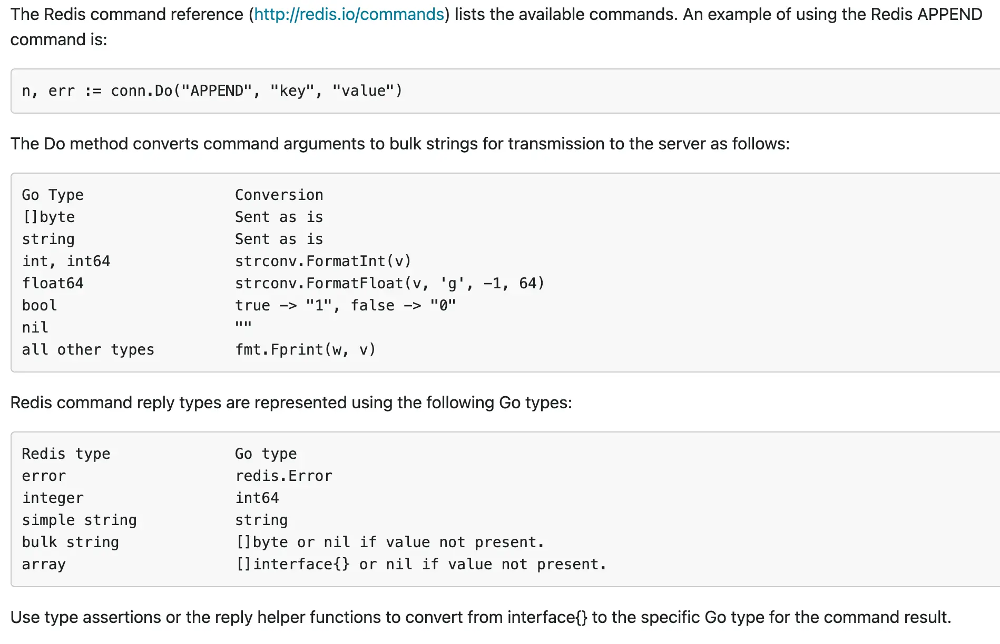
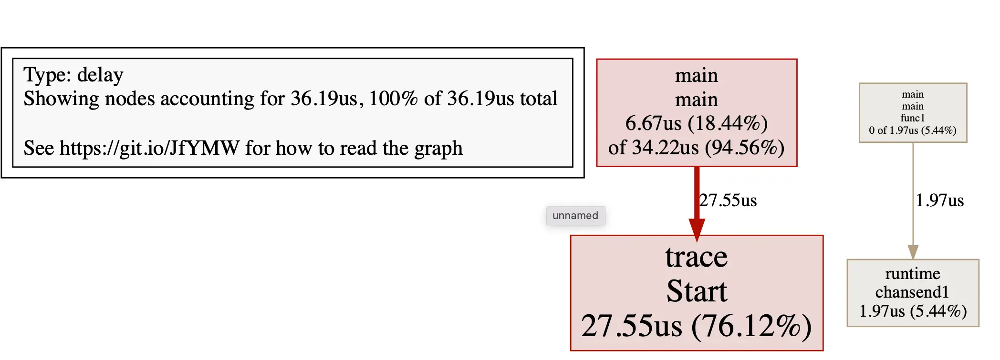

代码片段
AI 导读一分钟导读，先掌握全文主干。
核心观点
- %+v 输出 pkg/errors 栈调用，调试好帮手
- 一段段可抄的连接与操作片段：Memcached、Redis、MongoDB、trace、profile
- TrimLeft 连续去字符 vs TrimPrefix 只去一次，语义对照
关键结论与取舍
- 片段按“连接—操作—调试”组织，复制即用
- 2024-2026 更新补充了现代替代写法与性能注意
更丰富的errors
import (
"fmt"
"github.com/pkg/errors"
)
func main() {
//%+v格式输出,则带上栈调用,调试好帮手
fmt.Printf("err:%+v", errors.New("mynew"))
}memcached
package main
import (
"fmt"
//连接memcached
"github.com/bradfitz/gomemcache/memcache"
)
func main() {
key := "/golang"
client := memcache.New("127.0.0.1:11211")
err := client.Set(&memcache.Item{
Key: key,
Flags: 0,
Expiration: 0,
Value: []byte("<HTML><H2>hello,golang</H2></HTML>"),
})
if err != nil {
fmt.Println(err.Error())
return
}
item, err2 := client.Get(key)
if err2 != nil {
fmt.Println(err2.Error())
return
}
fmt.Println(string(item.Value))
}redis
package main
import (
"fmt"
"reflect"
//连接redis
"github.com/gomodule/redigo/redis"
)
func main() {
conn, err := redis.Dial("tcp", ":6379")
if err != nil {
fmt.Println(err.Error())
return
}
defer conn.Close()
setReply, setReplyErr := redis.String(conn.Do("set", "firstKey", "firstValue"))
if setReplyErr != nil {
fmt.Println(setReplyErr.Error())
return
}
fmt.Println("setReply:", setReply, reflect.TypeOf(setReply))
mgetReply, mgetReplyErr := redis.Strings(conn.Do("mget", "firstKey", "k1"))
if mgetReplyErr != nil {
fmt.Println(mgetReplyErr.Error())
return
}
fmt.Println("mgetReply:", mgetReply, reflect.TypeOf(mgetReply))
hgetallReply, hgetallReplyErr := redis.StringMap(conn.Do("hgetall", "myhash"))
if hgetallReplyErr != nil {
fmt.Println(hgetallReplyErr.Error())
return
}
fmt.Println("hgetallReply:", hgetallReply, reflect.ValueOf(hgetallReply))
lrangeReply, lrangeReplyErr := redis.Strings(conn.Do("lrange", "mylist", "0", "-1"))
if lrangeReplyErr != nil {
fmt.Println(lrangeReplyErr.Error())
return
}
fmt.Println("lrangeReply:", lrangeReply, reflect.ValueOf(lrangeReply))
smembersReply, smembersReplyErr := redis.Strings(conn.Do("smembers", "myset"))
if smembersReplyErr != nil {
fmt.Println(smembersReplyErr.Error())
return
}
fmt.Println("smembersReply:", smembersReply, reflect.TypeOf(smembersReply))
zrangeReply, zrangeReplyErr := redis.Int64Map(conn.Do("zrange", "mySortedSet", "0", "-1", "withscores"))
if zrangeReplyErr != nil {
fmt.Println(zrangeReplyErr.Error())
return
}
fmt.Println("zrangeReply:", zrangeReply, reflect.TypeOf(zrangeReply))
}
mongodb
package main
import (
"context"
"fmt"
"reflect"
"time"
//连接mongodb
"go.mongodb.org/mongo-driver/bson"
"go.mongodb.org/mongo-driver/mongo"
"go.mongodb.org/mongo-driver/mongo/options"
)
func main() {
ctx, cancel := context.WithTimeout(context.Background(), 20*time.Second)
defer cancel()
client, err := mongo.Connect(ctx, options.Client().ApplyURI("mongodb://localhost:27017"))
if err != nil {
fmt.Println("connect:", err.Error())
return
}
defer client.Disconnect(ctx)
// database/collection 采用懒创建:首次写入时才真正建库建表,不必事先建好
col := client.Database("firstDB").Collection("firstCol")
reply, err := col.InsertOne(ctx, bson.D{{"name", "pai"}, {"value", 3.14159}})
if err != nil {
fmt.Println("insert:", err.Error())
return
}
fmt.Println(reflect.ValueOf(reply))
}package main
import (
"context"
"database/sql"
"fmt"
"log"
_ "github.com/go-sql-driver/mysql"
)
func main() {
// user:pass@tcp(127.0.0.1:3306)/dbname?charset=utf8mb4&parseTime=True&loc=Local
db, err := sql.Open("mysql", "root:@(127.0.0.1:3306)/mytest?charset=utf8mb4&parseTime=True&loc=Local")
if err != nil {
fmt.Println(err.Error())
return
}
defer db.Close()
ctx, stop := context.WithCancel(context.Background())
defer stop()
rows, err := db.QueryContext(ctx, "SELECT v FROM js")
if err != nil {
log.Fatal(err)
}
defer rows.Close()
names := make([]string, 0)
for rows.Next() {
var name string
if err := rows.Scan(&name); err != nil {
log.Fatal(err)
}
names = append(names, name)
}
// Check for errors from iterating over rows.
if err := rows.Err(); err != nil {
log.Fatal(err)
}
fmt.Println(names)
}//获取当前git的hash值
gitOut, gitErr := exec.Command("git", "rev-parse", "--short", "HEAD").Output()
if gitErr != nil {
fmt.Println(gitErr)
return
}trace
package main
import (
"os"
"runtime/trace"
)
func main() {
trace.Start(os.Stderr)
defer trace.Stop()
ch := make(chan string)
go func() {
ch <- "hello,world"
}()
<-ch
}#注意2>trace.out重定向,产生数据文件
go run main.go 2>trace.out
#pprof,trace有些需要graphviz
brew install graphviz
#采用trace工具分析显示数据,
go tool trace trace.out
strings.TrimLeft去掉连续的字符，strings.TrimPrefix只去掉一次
graph LR
SRC[.go源码] --> FMT[go fmt
格式化] FMT --> VET[go vet
静态检查] VET --> CMP[go build
编译] CMP --> BIN[可执行文件] SRC --> TEST[go test
测试] SRC --> RUN[go run
直接运行] BIN --> INST[go install
安装到GOPATH/bin] style CMP fill:#00add8,stroke:#fff,color:#fff
格式化] FMT --> VET[go vet
静态检查] VET --> CMP[go build
编译] CMP --> BIN[可执行文件] SRC --> TEST[go test
测试] SRC --> RUN[go run
直接运行] BIN --> INST[go install
安装到GOPATH/bin] style CMP fill:#00add8,stroke:#fff,color:#fff
TrimLeft 与 TrimPrefix 压根不是一回事，混着用必踩坑：TrimLeft(s, cutset) 会把 cutset 里出现过的任一字当作字符集合，从字符串左端逐个吞掉，直到碰见不在 cutset 集合里的字符才停手；TrimPrefix(s, prefix) 则要求 s 的确以 prefix 作为前缀才会切掉这一次，前缀对不上一律原样返回。
var s = "aabHello"
strings.TrimLeft(s, "ab") // "Hello" 字符集合逐个吃
strings.TrimPrefix(s, "aa") // "bHello" 整串匹配,只去一次
strings.TrimPrefix(s, "ab") // "aabHello" 不匹配,原样返回profile
import (
"github.com/pkg/profile"
_ "net/http/pprof"
)
// go http.ListenAndServe("0.0.0.0:8080", nil)
func main() {
// p.Stop() must be called before the program exits to
// ensure profiling information is written to disk.
p := profile.Start(profile.MemProfile, profile.ProfilePath("."), profile.NoShutdownHook)
// ... 业务代码 ...
// You can enable different kinds of memory profiling, either Heap or Allocs where Heap
// profiling is the default with profile.MemProfile.
// 二选一:想改成 "每次分配 Allocs" 的 profile,注释掉上面那行,启用下面这行
p = profile.Start(profile.MemProfileAllocs, profile.ProfilePath("."), profile.NoShutdownHook)
// 采用 web 接口提供 http://localhost:8080/debug/pprof/
go http.ListenAndServe("0.0.0.0:8080", nil)
}# 等上步生成的的cpu.profile
go tool pprof cpu.profile
# 常见命令 top,前几个费时 web 输出临时svg图片展示
Go 代码片段更新（2024-2026）
平时写 Go 顺手常用的几种写法：
// 1. 结构化错误
type AppError struct {
Code string
Message string
Cause error
}
func (e *AppError) Error() string { return e.Message }
func (e *AppError) Unwrap() error { return e.Cause }
// 2. 泛型选项模式
type Option[T any] func(*T)
func WithName[T any](name string) Option[T] {
return func(t *T) { /* set name */ }
}
// 3. slog 日志
slog.Info("processing", "input", input, "duration", time.Since(start))
// 4. slices 包
slices.SortFunc(items, func(a, b Item) int {
return cmp.Compare(a.Priority, b.Priority)
})